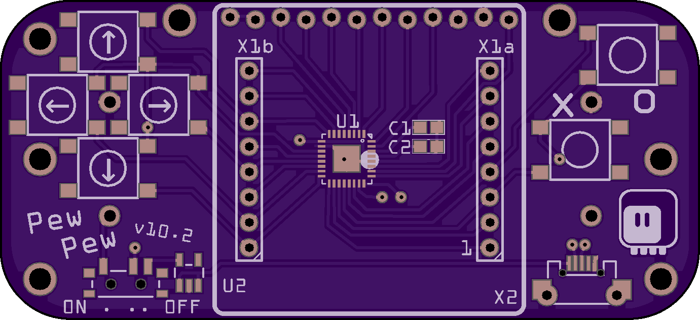
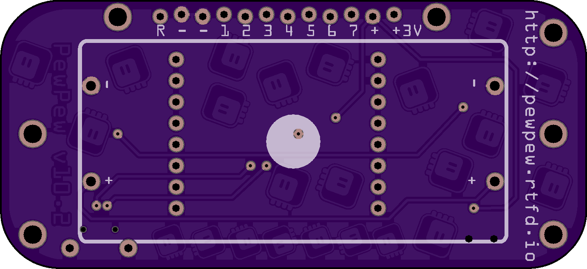
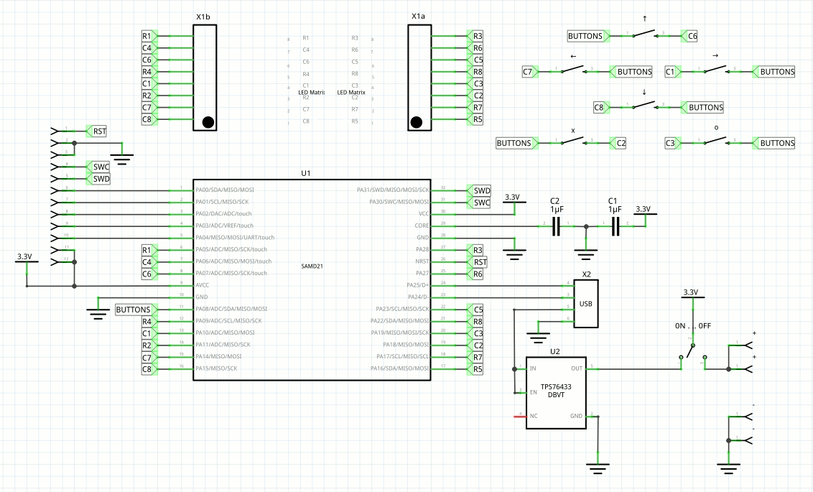

Version X¶
Published on 2018-08-16 in PewPew Standalone.
It’s a kind of anniversary: I have reached the tenth prototype of the “standalone” version of PewPew. Admittedly, not all prototypes have been actually realized in hardware, but many were, and all were ready for it. In any case, I present you the tenth version:
I took some liberties in the design of the back side, since it will be mostly hidden anyways:
As you can see I narrowed the device back to the 32mm of the LED matrix, and I squeezed the pin header underneath, only accessible from the bottom. I think this makes the whole design more robust, and doesn’t much affect convenience. I can put a color sticker on the top edge of the matrix to serve as a legend for the pins.
I’m also considering adding laser-cut pieces on the underside and top, similar to how this year’s Hackaday Belgrade badge had. This way it will be thicker and easier to hold. Of course they are optional. I will prototype them with wood for now.
There is another option in there — I added a footprint for a voltage regulator next to the power switch. It will be unpopulated by default, but if you add it, you can use the device without battery, just connected to USB.
The battery holder is for 2×AAA batteries, and I made holes for two versions — because the order of cables coming out of them seems to be mostly random. A 2×AA holder would fit too, but it would cover the pin header, so not recommended.
There are two mounting holes next to the pin header. Those can be used to securely attach any kind of larger add-ons for the device. The laser-cut parts will have a suitable cutout, of course. There is also plenty of holes for either attaching a case, or attaching the device to a larger contraption.
Finally, I made both the power switch and the USB port a little bit recessed — so that they don’t stick outside the outline of the board. That should make it easier to carry it in your pocket.
Oh, and I even made a schematic!
